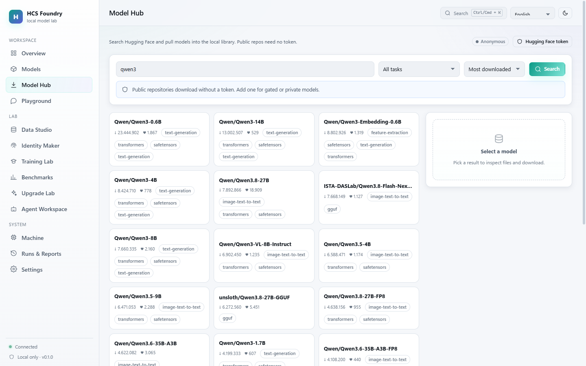
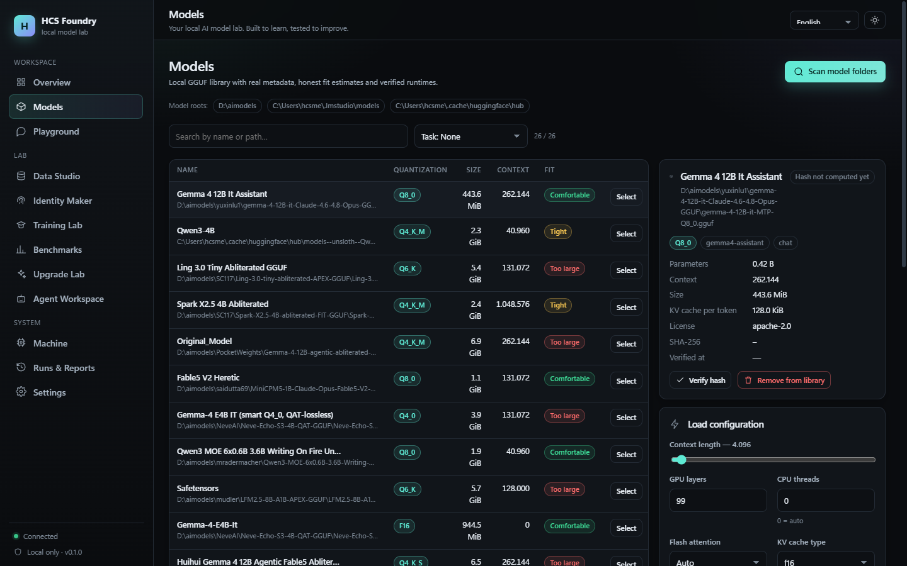
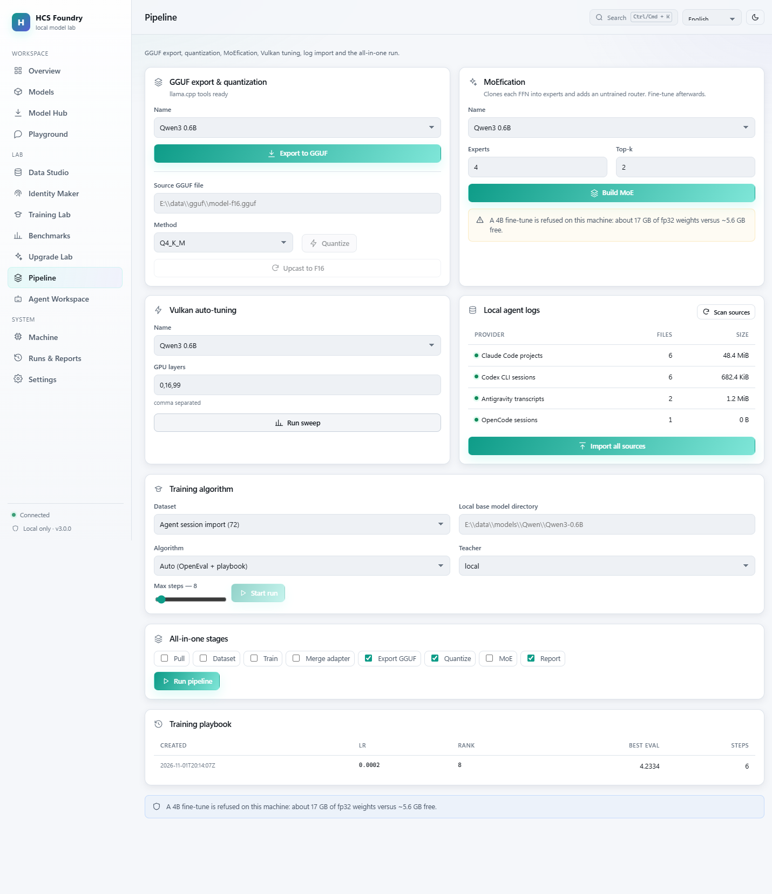
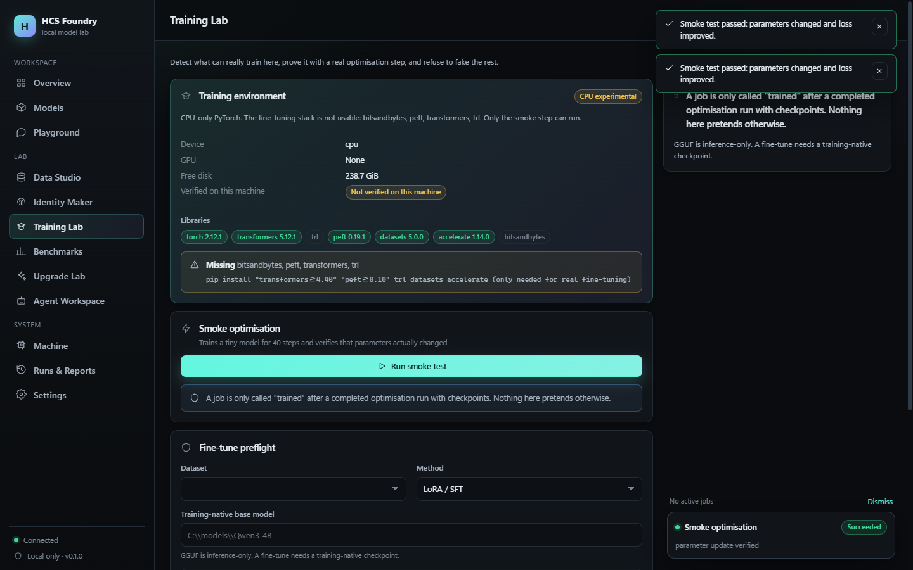
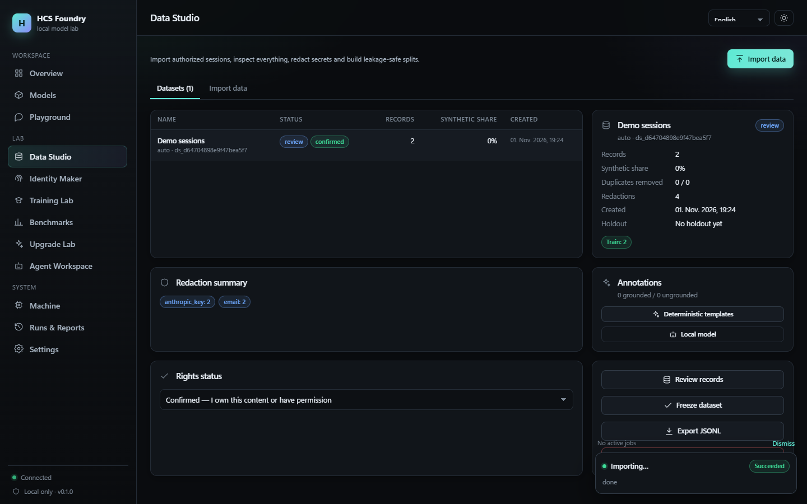
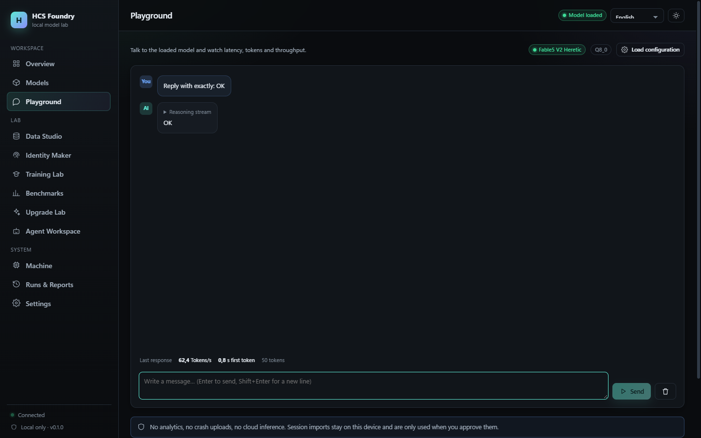
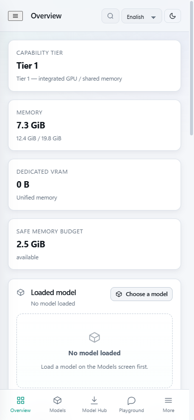

Your local AI model lab.
Built to learn, tested to improve.
Pull GGUF models from Hugging Face, run them on Vulkan, clean your own agent logs, fine-tune LoRA or INT4, export and quantize GGUF, convert dense models to MoE, and benchmark coding and agentic tasks — all on one machine.

Everything in one local workbench
Twelve connected surfaces instead of a dozen disconnected scripts. Each one records what it did and refuses what the machine cannot do.
Model Hub
Search Hugging Face, inspect files with LFS hashes, pull with or without a token. Resumable, hash-verified, cancellable.
anonymous + tokenGGUF library
Real header metadata, parameter counts, KV bytes/token and honest fit estimates against the live memory budget.
no fake VRAMVulkan inference
Supervised llama-server, streaming, cancellation, metrics, auto-tuned GPU layers per model.
Data Studio
Five session adapters, consent gate, redaction, exact + near dedupe, leakage-safe splits, freeze and export.
auditableIdentity Maker
One prompt becomes an editable identity card and a small synthetic dataset. Facts and proposals stay separate.
synthetic, labelledTraining Lab
SFT, DPO, distillation and INT4/QLoRA. OpenEval during training, auto LR/stop decisions, best checkpoint.
real optimisationGGUF out + quantize
Merge the adapter, convert to GGUF, quantize to Q2–Q8, verify by loading and answering.
measured sizesMoEfication
Clone each FFN into experts, add a top-k router, forward-check the result, refuse impossible sizes.
real conversionBenchmarks
Instruction adherence, executed codegen, repo-fix, agentic tasks and a SWE-bench-format adapter — in venvs.
deterministic oraclesUpgrade Lab
Failure taxonomy → candidate → re-evaluation → holdout check → human gate → rollback.
no self-promotionAgent workspace
Visible plans, typed allowlisted tools, approval queue and a bounded repair loop. No unrestricted shell.
supervisedCLI + API
14 command groups, --json everywhere, and a loopback-only API with pairing, Origin checks and path allowlists.
One pipeline, from logs to a quantized model
Every stage writes a checkpoint and a report. A stage that cannot run is skipped with the exact reason.
Unified auto trainer
Decides between fp32 SFT, streaming INT4 and a disk-backed INT4 store from model size, free RAM and the measured playbook, then runs the whole chain. No configuration guesswork.
Full log cleanup
Discovers Claude Code, Codex, Antigravity and OpenCode sessions, redacts secrets, filters low-quality records, freezes with a holdout and writes a quarantine copy. Originals are never modified.
Numbers from this machine, not a leaderboard
AMD Ryzen 7 7735HS · Radeon 680M (unified memory, 0 B dedicated VRAM) · 19.8 GiB visible RAM · Vulkan 1.4.357.
| Measurement | Result | Context |
|---|---|---|
| GGUF export | 1.41 GiB in 209 s | 0.6B, F16 |
| Quantize Q4_K_M | 462 MiB, ratio 0.321, 17 s | from F16 |
| Inference after export | 113.5 tok/s, TTFT 0.79 s | Q4_K_M |
| Vulkan sweep | 51.4 → 107.8 tok/s (2.1×) | ngl 0 → 99 |
| Auto SFT | eval 4.344 → 4.233 | 6 steps |
| INT4 SFT | loss 5.72 → 4.89 | 196 layers |
| 4B INT4, disk-backed | loss 4.45 → 3.55 in 51 s | 200 layers, 4.57 GB store |
| 4B Q4_K_M | loads and answers | ctx 512, Vulkan |
Training that tells the truth
A job is only called “trained” after an optimisation run that produced checkpoints and a finite loss. Everything else is labelled as what it is.
SFT / LoRA
transformers + PEFT, architecture-aware targets, live loss, checkpoints, resume.
INT4 / QLoRA
Group-wise 4-bit packing, dequantized per layer, LoRA in fp32. No bitsandbytes, works on CPU.
DPO
Synthetic preference pairs with an adapter-disabled reference. One model in memory.
Distillation
A local or gateway teacher writes answers, then the student is trained on them.
OpenEval + auto-decision
Held-out evaluation every N steps, best-checkpoint saving, LR halving on plateau and early stop — recorded as controller actions.
Training playbook
Winning recipes are stored per model/dataset signature and seed the next automatic run. A measured memory, not a neural meta-learner.
Inside the app
Dark-first, responsive, keyboard accessible, German / English / French.






Start in one minute
The executable bundles the API and the UI. The source install adds the ML stack for fine-tuning.
Windows executable
No Python, no Node. Data goes to %LOCALAPPDATA%\HCS Foundry.
# download from the release, then HCSFoundry.exe
From source
Python 3.11+ and Node 20+.
cd server python -m pip install -e . python -m foundry.cli serve --port 8770 # second terminal cd web && npm install && npm run build
Pull and run a model
foundry hf pull Qwen/Qwen3-0.6B --file model.safetensors foundry models scan --root data/models foundry models run <id> --prompt "Say hello"
Clean logs and train
foundry logs clean --json foundry train unified --dataset <id> --model data/models/Qwen/Qwen3-0.6B foundry gguf quantize data/gguf/model-f16.gguf --method Q4_K_M
What it does not do
Documented instead of hidden.
No 4B/8B quality fine-tune here
fp32 loading needs 18.0 GiB for 4B; this machine has ~11 GiB available. The disk-backed INT4 store makes a 4B run possible (proven for a few steps), but not a useful one — and the trainer says so with numbers instead of pretending.
No Vulkan training
PyTorch has no Vulkan backend. Vulkan is used for inference and tuning only.
No GGUF → HF conversion
Only GGUF→F16 requantization is available; the toolchain has no GGUF→safetensors converter.
Pair this page with your machine
The deployed page is a client only. It asks your local service for a pairing token and then reads status — nothing is trained or stored in the cloud.
127.0.0.1:8770 …
- Version
- —
- Model
- —
What it can and cannot do
- Can: read health, machine profile, models and run history from your local service.
- Cannot: start training, download models or touch files without an explicit pairing token — and the token stays in this tab's memory.
- Never: no telemetry, no token in
localStorage, no cloud inference.
Blocked by the browser? Add this origin to FOUNDRY_UI_ORIGINS and restart the service:set FOUNDRY_UI_ORIGINS=https://hcs-foundry-site.vercel.app
Build your own local model lab
MIT licensed. No account. No cloud. Your hardware, your data, your results.